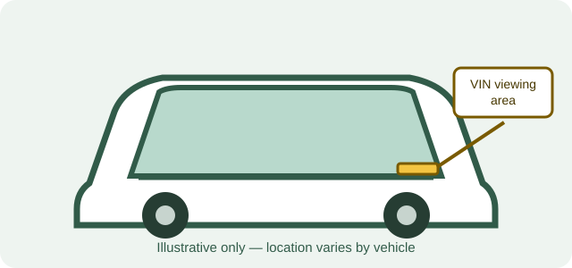
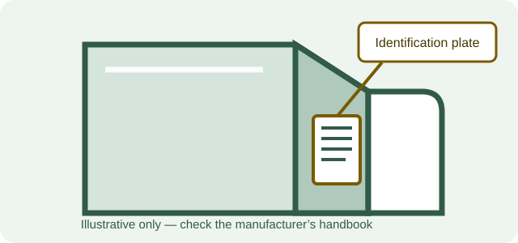

Where to find the VIN number
The VIN is in several places on a vehicle and on its papers. Find at least two and make sure they match.
Last updated 24 November 2026
Check a VIN now. Use the free VIN checker to validate a VIN and decode its country, maker and model year.


Where to look on a car
- Base of the windscreen, driver side. Look through the glass from outside for a stamped plate.
- Compliance plate. A metal or foil plate in the engine bay, on the firewall, or on the driver's door pillar. It also shows the build date.
- Engine bay. Often stamped on the firewall or on a strut tower.
- Body or chassis. Stamped on the body or frame, sometimes under the seat or in the wheel arch on older cars.
- Documents. Registration papers, insurance policy and the sale contract.
Where to look on a motorcycle
Check the steering head tube at the front of the frame, and look for a compliance plate on the frame. See our motorcycle VIN check guide.
Where to look on a caravan or trailer
Look for a compliance plate on the drawbar or front of the chassis. See our caravan VIN check guide.
Compare all the VINs
The VIN on the windscreen, the compliance plate and the registration papers should all be identical. If they differ, if a plate looks re-riveted, or if the stamping looks scratched or re-done, stop and ask the seller to explain it in writing.
A mismatch does not prove a vehicle is stolen, but it is a reason not to hand over money until it is explained and checked with the authority.
Next steps once you have the VIN
- Enter it in the free VIN checker.
- Run a PPSR search at ppsr.gov.au/carcheck.
- Confirm registration with the state road authority.
Frequently asked questions
Can I find the VIN without the car?
Yes. Check the registration papers, insurance documents or the sale advertisement. Ask the seller to send a clear photo of the windscreen VIN and the compliance plate.
Why is my VIN not 17 characters?
Older vehicles can have a shorter chassis number. On those, use the chassis number as the identifier.
Is the VIN on the engine?
The engine has its own engine number, which is different from the VIN. The PPSR search uses the VIN or chassis number, not the engine number.